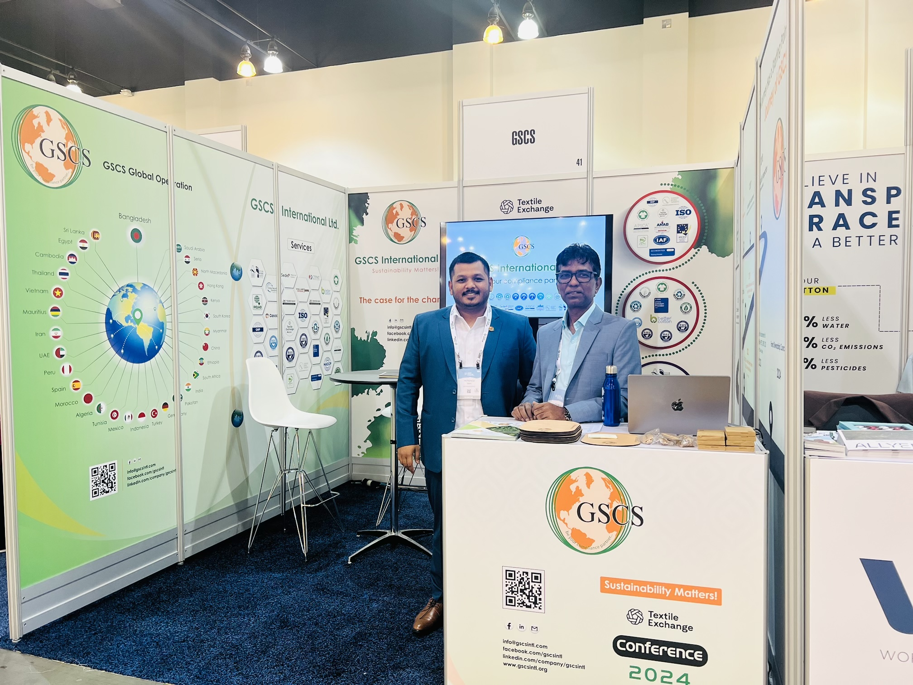
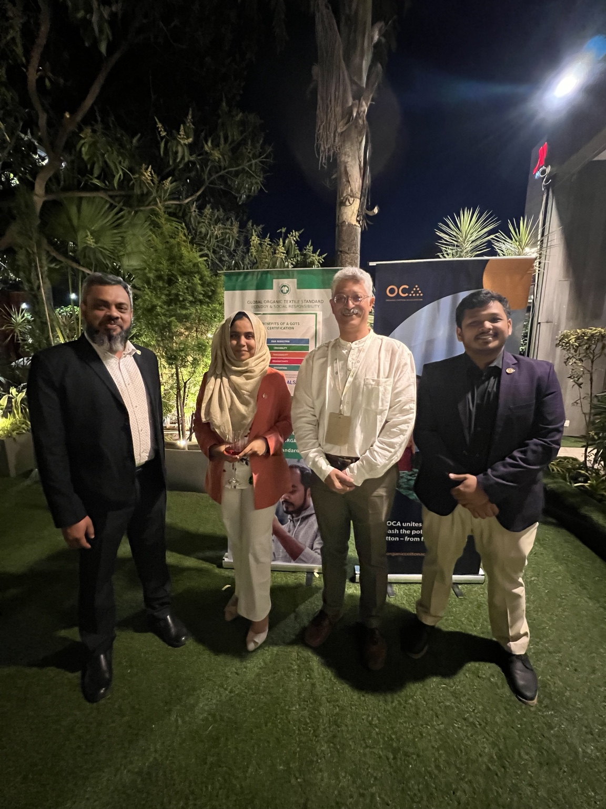
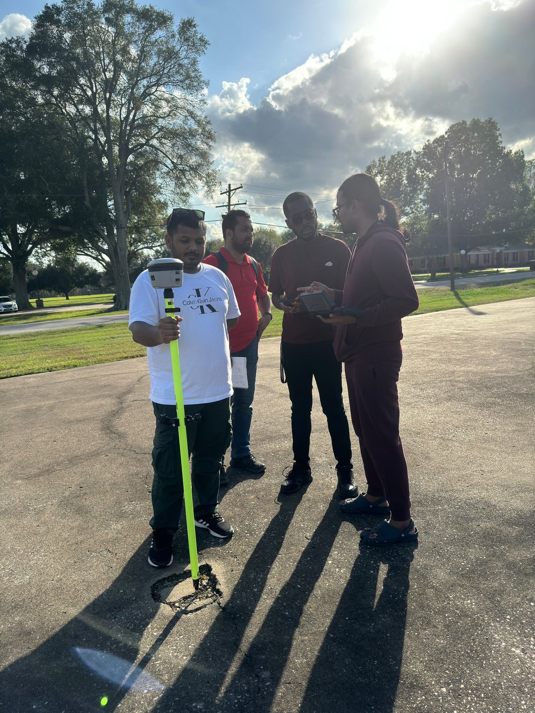
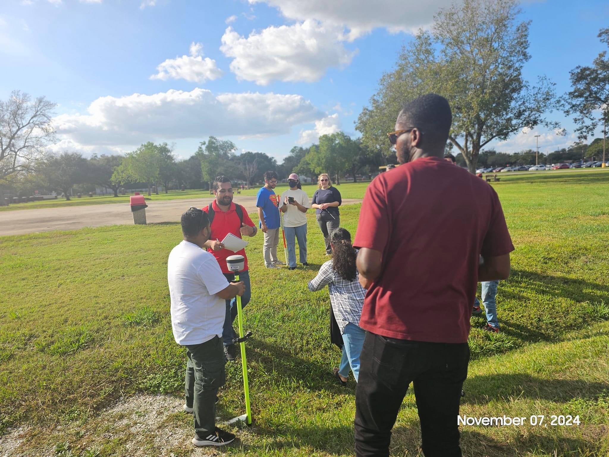

H₂O
Water & Wastewater Treatment
Water quality, industrial wastewater, reverse osmosis, effluent treatment, reuse, solar desalination, and resilient purification systems.
Environmental Engineering · Sustainability · Applied Research
Md Rashedul Islam, M.S.
Environmental engineer, sustainability and compliance professional, applied researcher, and educator working at the intersection of environmental systems, industrial performance, geospatial analysis, and emerging technology.

Google Scholar metrics reflect the August 2026 profile snapshot.
About
My work is shaped by both technical analysis and real-world implementation.
I began in textile engineering, developing a practical understanding of manufacturing systems, material performance, quality, and supply chains. I then expanded into Environmental Sciences & Management and Environmental Engineering, adding expertise in water and wastewater treatment, life cycle assessment, GIS, environmental management systems, and sustainability.
Across third-party auditing and quality assurance roles, I evaluated environmental, occupational health and safety, quality, traceability, and responsible-sourcing systems in manufacturing supply chains. At Lamar University, I supported resilience and sustainability research and completed an M.S. in Environmental Engineering. I now also teach Environmental Systems, connecting professional environmental practice with science education.
My long-term focus is practical environmental problem-solving: using engineering evidence, monitoring, management systems, and emerging technology to improve water security, resource efficiency, climate resilience, and environmental performance.
Research Areas
My research combines engineering fundamentals with AI, geospatial analysis, sustainability management, and industrial applications.
Water quality, industrial wastewater, reverse osmosis, effluent treatment, reuse, solar desalination, and resilient purification systems.
Machine learning, IoT sensors, predictive analytics, real-time monitoring, early warning, and explainable environmental decision support.
Carbon sequestration, coastal water quality, remote sensing, ecological modeling, and climate-resilience applications.
Spatial analysis, contaminated-site assessment, plume delineation, digital twins, field data, and remediation decision support.
Material and process comparisons, environmental hotspots, recycled textiles, resource efficiency, and circular manufacturing.
ISO 14001, responsible sourcing, traceability, corrective action, environmental assurance, and continual improvement.
Publications
Peer-reviewed and scholarly work spanning water treatment, AI, GIS, blue carbon, air quality, disaster resilience, and sustainable textiles.
View Google Scholar ↗2025 · Coastal ecosystems · AI · Water quality
Review of Applied Science and Technology, 4(2), 669–696. Integrates AI, remote sensing, and ecological indicators to connect blue-carbon sequestration with water-quality dynamics.
DOI ↗2025 · Water treatment · Smart cities
International Journal of Business and Economics Insights, 5(3), 270–293. AI-enabled solar desalination and effluent treatment for resilient, resource-efficient urban water systems.
DOI ↗2025 · Blue carbon · Remote sensing
American Journal of Advanced Technology and Engineering Solutions, 1(1), 41–70. Reviews AI, satellite, LiDAR, and UAV approaches for blue-carbon assessment and forecasting.
DOI ↗2025 · Textile engineering · Materials
International Journal of Textile Science, 14(1), 5–14. Compares fabric weight, bursting strength, shrinkage, pilling, and abrasion resistance.
DOI ↗2024 · GIS · Digital twin · Site assessment
American Journal of Data Science and Analytics, 5(12), 1–42. Uses GIS, digital twins, and real-time environmental data for plume delineation and remediation decision support.
DOI ↗2024 · Air quality · AI · IoT
Journal of Machine Learning, Data Engineering and Data Science, 1(1), 147–162. Reviews AI and IoT sensors for real-time urban air-quality monitoring and adaptive response.
DOI ↗2024 · Disaster management · MIS · GIS
Academic Journal on Innovation, Engineering & Emerging Technology, 1(1), 145–158. Reviews decision-support systems, GIS, predictive analytics, coordination, and resource allocation in disaster response.
DOI ↗2024 · Water purification · Solar desalination
Frontiers in Applied Engineering and Technology, 1(1), 59–83. Reviews solar stills, PV-powered reverse osmosis, hybrid desalination, thermal storage, and nanotechnology.
2023 · Industrial wastewater · Machine learning
International Journal of Scientific Interdisciplinary Research, 4(2), 68–111. Examines machine-learning integration, predictive control, effluent compliance, and energy reduction in industrial RO treatment.
DOI ↗2026 · Circular textiles · Sustainability
Research focused on circularity and sustainability in Bangladesh's ready-made garment sector. Journal details are intentionally omitted until verified.
Google Scholar ↗Career Timeline
Education
Teach standards-aligned Environmental Systems, connecting ecosystems, Earth systems, sustainability, human impacts, and environmental problem-solving with real-world professional examples.
Research
Supported environmental management, resilience, life cycle assessment, resource-efficiency, and sustainability-related research and technical documentation.
Leadership & QA
Reviewed and supported third-party audits, certification decisions, nonconformities, corrective actions, traceability, and chain-of-custody requirements across sustainability and management-system programs.
Audit & Review
Conducted and reviewed management-system and sustainability audits, documented evidence, identified nonconformities, and evaluated corrective actions and continual-improvement measures.
Auditing
Performed third-party manufacturing-facility assessments covering management systems, sustainability standards, traceability, compliance documentation, and corrective-action verification.
Recognition
Recognition for team leadership and professional contribution during the 2022 year.
Media & Interview · Aug 17, 2026
Published interview on environmental engineering, early-warning monitoring, AI and data-driven methods, water and air quality, compliance, and practical problem-solving.
Read Interview ↗
Professional Engagement & Fieldwork
Selected photographs from professional conferences, sustainability activities, and GIS field data collection.




Professional Affiliations
Education
M.S.
Water treatment, biological wastewater treatment, water-quality modeling and monitoring, life cycle analysis, GIS, ecology, and engineering design.
M.S.
Environmental impact assessment, policy, EMS, waste management, wastewater, OHS management, green technologies, and sustainability.
B.S.
Fabric manufacturing, environmental pollution control, CSR, textile testing, quality assurance, supply chain management, and industrial operations.
Contact
For professional or academic inquiries, connect by email or through my research and professional profiles.